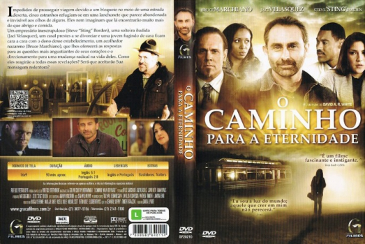

O Caminho Para a Eternidade (2010)

Eu sou a luz do mundo; aquele que crer em mim não perecerá.

Avaliação (TMDb):


6.0/10 (33 votos)
Avaliação (Usuário):
Outro Título:The Encounter
País:United States, 85 minutos
Idiomas falados:Inglês, Português
Gênero(s):Drama, Família
Diretor(s):David A.R. White
Codec:MPEG-2 (DVD)
Número: 3067
Sinopse:
Impedidos de prosseguir viagem devido a um bloqueio no meio de uma estrada deserta, cinco estranhos refugiam-se em uma lanchonete que parece abandonada e invisível aos olhos de alguns. Eles nem imaginam que lá encontrarão muito mais do que abrigo e comida.
Elenco:
Bruce Marchiano, Jaci Velasquez, Steve Borden, Jessica Belkin
Tipo de mídia: DVD5,
Legendas: Inglês, Português
Alugado: Não
Tela: Unknown